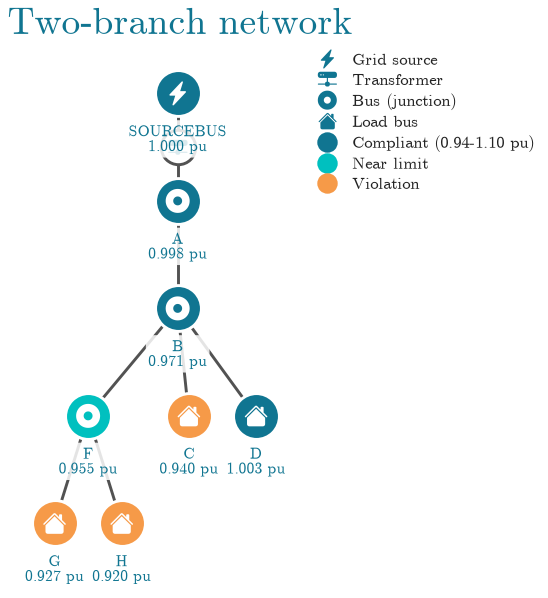
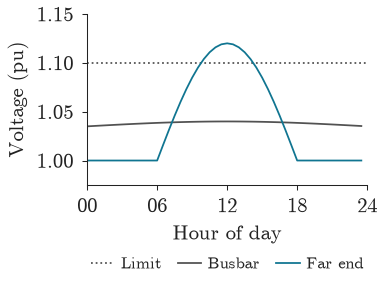

Plotting#
popo.plotting draws network diagrams, line plots and tables in one style, the style used by
every figure in this documentation. It needs the plot extra.
Figure style#
popo.plotting.style.configure() applies the style to every figure that follows: serif type,
thin axes without a grid, and the popo palette. With latex=True, the default, text is typeset by LaTeX,
which must be installed; latex=False uses matplotlib’s own text rendering.
popo.plotting.line_style calls the same function and adds conventions for line plots.
from popo.plotting import line_style
line_style.configure(latex=False)
Network diagrams#
topology_from_dss() reads the topology and bus voltages of a solved
circuit, and plot_topology() draws it as a schematic: a lightning bolt
for the source, a transformer badge, a house for each customer, and every bus coloured by its voltage
status.
from popo.network import Circuit
from popo.plotting.network import plot_topology, topology_from_dss
circuit = Circuit()
for command in [
"Clear",
"Set DefaultBaseFrequency=50",
"New Circuit.Example",
"Edit Vsource.Source bus1=SourceBus basekv=11 pu=1.0 phases=3",
"New Transformer.LVTR Buses=[SourceBus, A.1.2.3] Conns=[delta wye] KVs=[11, 0.4] KVAs=[250 250] xhl=2.5",
"New Linecode.240sq nphases=3 R1=0.127 X1=0.072 units=km",
"New Linecode.16sq nphases=1 R1=1.15 X1=0.083 units=km",
"New Line.A_B bus1=A.1.2.3 bus2=B.1.2.3 length=1 units=km linecode=240sq",
"New Line.B_F bus1=B.1.2.3 bus2=F.1.2.3 length=1 units=km linecode=240sq",
]:
circuit.command(command)
for i, (feeder, house, kw) in enumerate([("B", "C", 7), ("B", "D", 6), ("F", "G", 7), ("F", "H", 9)], start=1):
phase = 1 + (i - 1) % 3
circuit.command(f"New Line.L{i} bus1={feeder}.{phase} bus2={house}.{phase} length=0.01 units=km linecode=16sq")
circuit.command(f"New Load.{house} bus1={house}.{phase} phases=1 kV=0.23 kW={kw} pf=0.95")
circuit.command("Set VoltageBases=[11 0.4]")
circuit.command("CalcVoltageBases")
circuit.solve()
plot_topology(topology_from_dss(circuit.dss), title="Two-branch network", figsize=(6.0, 4.2));
findfont: Failed to find font weight bold for cmr10, now using 400.

Houses C, G and H fall below 0.94 pu and are drawn in orange. House D, at the same distance
as C but alone on phase 2, stays at 1.00 pu: on an unbalanced network the phase a customer is on
matters as much as its distance from the transformer. The colour thresholds default to 0.94 and 1.10 pu; pass limits= a VoltageLimits to use
a standard’s band instead. orientation="horizontal" lays the tree out from left to right.
Line plots#
line_style provides the pieces of a line plot: new_panel for a panel at its
final size (by default 0.40 of a 6.3 in text width, with an aspect of 0.74), hour_axis for a day
from 00 to 24, set_y_axis for padded limits and a few round ticks, reference_line for a dotted level
such as a limit, finish for the axes, and legend_below for a legend under the plot. show lays out
the figure and places the legend. popo.plotting.tokens names the palette colours by
role: PRIMARY for the subject of a figure, DANGER for a failure, TEXT_MUTED for context.
import numpy as np
from popo.plotting import tokens
hours = np.arange(48) / 2
busbar = 1.035 + 0.005 * np.sin(np.pi * hours / 24)
far_end = 1.0 + 0.12 * np.clip(np.sin(np.pi * (hours - 6) / 12), 0, None)
fig, ax = line_style.new_panel()
line_style.reference_line(ax, 1.10, label="Limit")
ax.plot(hours, busbar, color=tokens.TEXT_MUTED, lw=line_style.LINE_WIDTH, label="Busbar")
ax.plot(hours, far_end, color=tokens.PRIMARY, lw=line_style.LINE_WIDTH, label="Far end")
line_style.hour_axis(ax)
line_style.set_y_axis(ax, busbar, far_end, [1.10])
ax.set_ylabel("Voltage (pu)")
line_style.finish(ax)
line_style.legend_below(ax, ncol=3)
line_style.show(fig)

Tables#
themed_gt() styles a DataFrame as a
Great Tables table in the same palette.
import pandas as pd
from popo.plotting.tables import record_table, themed_gt
voltages = circuit.bus_voltages().query("bus in ['c', 'd', 'g', 'h']")
themed_gt(voltages[["bus", "phase", "vmag_pu"]].reset_index(drop=True), decimals=3)
| bus | phase | vmag_pu |
|---|---|---|
| c | 1 | 0.940 |
| d | 2 | 1.003 |
| g | 3 | 0.927 |
| h | 1 | 0.920 |
record_table() shows a one-row summary, such as
summary(), as a two-column table.
record_table(circuit.summary(), title="Circuit summary")
| Circuit summary | |
| statistic | value |
|---|---|
| converged | True |
| n buses | 8 |
| n lines | 6 |
| n loads | 4 |
| n transformers | 1 |
| total p loss kw | 1.449 |
| total q loss kvar | 1.240 |
Limitations#
plot_topologysuits networks of up to a few dozen buses. On a feeder with hundreds of buses the labels overlap; plot the voltages as a line or distribution instead.configurechanges matplotlib’s global settings for the rest of the session. Callmatplotlib.rcdefaults()to undo it.Great Tables output is HTML. It renders in notebooks and in this documentation, not in a plain terminal.